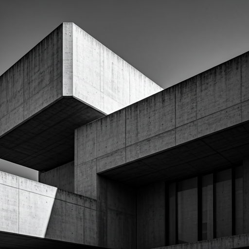
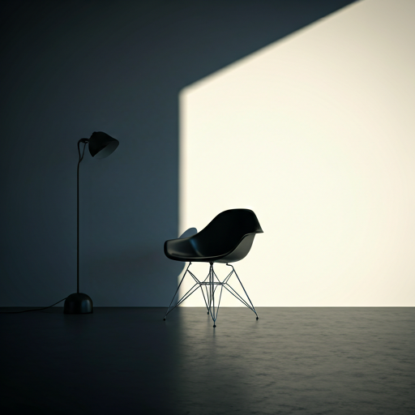
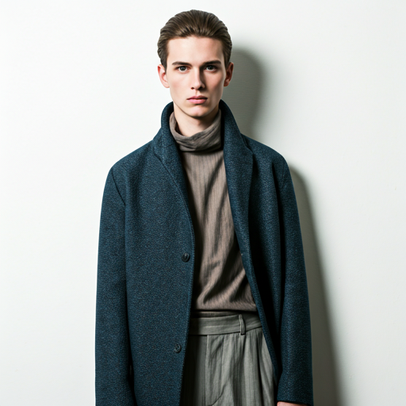
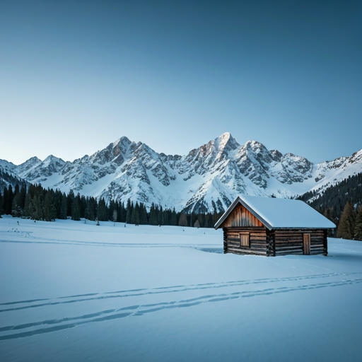
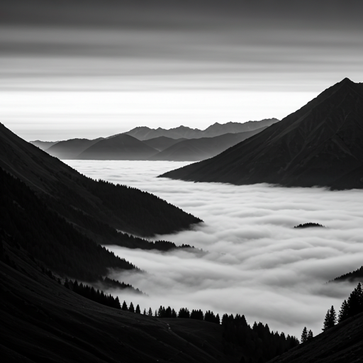
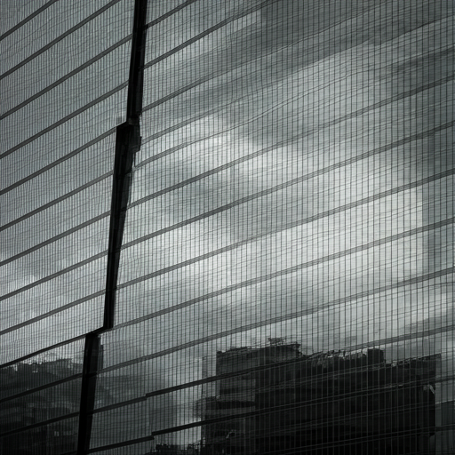
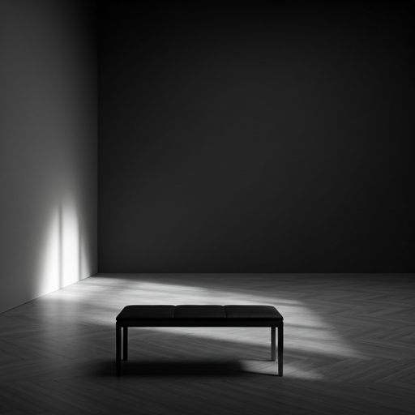

The Quiet
Composition
A study in light, shadow, and architectural silence.
Selected Works
Featured Projects
Curated 2024 Collection

Interior Monologue
Architecture & Light
Shadow Structures
Landscapes

Form & Texture
Editorial Fashion

Silent Horizon
Cinematic Nature
About the Artist
Arthur
Arthur
Vandenberg
Based in Brussels, Arthur explores the intersection of brutalist architecture and the fleeting nature of light. His work is characterized by a stark reduction of elements, favoring negative space to emphasize emotional resonance.
With over a decade of experience in editorial and fine art photography, his images have been featured in international galleries and premium lifestyle publications. He believes that every frame should tell a story through what it excludes as much as what it contains.
Awards
PX3 Gold 2023
Base
Berlin / London
Aperture
& Ink
A digital archive of monochromatic studies exploring the intersection of light, shadow, and architectural permanence.
Curated By
Elias Thorne

STILLNESS
2022 / SERIES_B
STRUCTURE V
A study of repetitive geometry and the way light fractures across glass and steel during the winter solstice.
SOLITUDE
2023 / MONOLOGUE